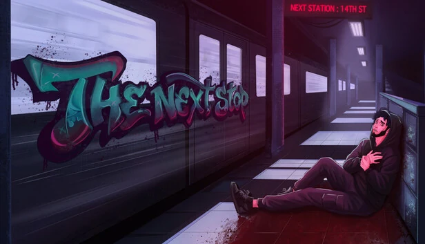

Desarrollado por Paranoid Delusion
The Next Stop
Colaboro en la programación y el arte técnico del juego, ajustando las interacciones y la interfaz de diálogo. Es una aventura de misterio en un metro atrapado en un bucle temporal.
Unity · C#
Ficha oficial de The Next Stop en Steam

Proyecto personal en desarrollo
Don’t Anger the Boss
Trabajo en el desarrollo de este plataformas 2.5D desde el inicio. Mi aportación se centra en programar las mecánicas y conectar arte y código en Unity. También he modelado parte de los recursos 3D del juego.
Unity · C# · Modelado 3D
Lanzamiento previsto para 2027.